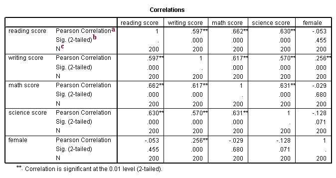

EXPLORATORY ANALYSIS TOOL
REIMAGINING EXPLORATORY ANALYSIS
Data analysis in social science research can be a cognitively taxing process. Existing industry tools like SPSS, SAS, or R, are not suited for the initial stages of data cleaning, visualization, and diagnostic statistics. Driven by a desire for a better way to analyze data, I coded together a prototype for this novel data analysis tool using D3.JS. This prototype of the Exploratory Data Analysis Tool (EAT) is an imagination of a data analysis tool that truly allows you to "touch and feel" the data. The EAT is still a work in progress - I am currently implementing the drag and drop function, and am now learning how to hook this up with ReactJS. Check out a working prototype here.
THE PROBLEM
Exploratory Data Analysis (EDA) requires high level theoretical and critical thinking. Ideally, an EDA tool should be a malleable, intuitive interface that enables big picture thinking in addition to the ability to further investigate specific relationships.
Traditional data analysis tools like SPSS (created in 1968), SAS (1976), and R (1980) are great for conducting statistical tests and confirmatory hypothesis testing, but can become cognitively taxing for exploratory data analyses. There are a number of factors that contribute towards this:
1. Non-Interactive Output
All three tools are based around a model of syntax-output, syntax-output. Syntax is written, run, and output comes out in a long stream in the console window. The output is not interactive, and if one wishes to further explore a relationship, new syntax must be written. For instance, imagine that we have just run correlations between a number of variables, and wish to further explore significant relationships in the form of regressions. In SPSS, we would have to go back to the syntax editor and write completely new code. This becomes tedious after a few iterations.
Possible solution: make the output interactive. The intuitive action here would be to click on the significant relationship in the output, which would bring you directly to a scatterplot. But existing tools do not seem to be designed around the natural flow of the data analysis process.

2. Endless Scroll of Output
SPSS records all operations performed by the user in another window, called "Output". In order to find the results of previously implemented analyses, one would need to either scroll up through existing output, or implement a new, redundant analysis. As more tests are conducted, it becomes difficult to keep track of findings.
Possible solution: keep a separate "notebook" where one can save interesting results. This would enable users to only keep track of the important findings, rather than having to scroll through irrelevant output.
3. Difficulty in generating visuals/non-interactive
Visuals in SPSS are notoriously annoying to create (easier in R using various plotting packages). However, none of these statistical tools enable great interactive visuals. Being able to click on specific data points, remove outliers, select groups of points, is a very intuitive function that doesn't exist in any existing statistical packages. This functionality is usually reserved for visualization packages (like Spotfire, Tableau), but visualization packages also lack the ability to run statistical analyses required in EDA.
Possible solution: redesign the flow of creating data visualizations in statistical packages.
USER INTERVIEWS
Thus far, all thoughts for possible improvements were derived from my personal experiences. I conducted a series of user interviews with social science, public health, and neuroscience researchers.
User Interview 1: Psychology Graduate Student
This individual was a graduate student studying social psychology at Yale. She had an extensive statistics background, and was highly proficient with R. Many of her datasets were of Qualtrics survey format, and came from Amazon MTurk. Key points from this interview were:
- She was a very proficient user of R, and although was aware of the issues I had encountered, did not consider them to be that inconvenient
- She worked around the problem of non-interactive output by becoming very familiar with syntax
- She organized her syntax very carefully to be able to rerun specific analyses in R very easily. RStudio was helpful in this regard.
User Interview 3: Public Health Quantitative Analyst This was a researcher who specialized in analysis of big public health data, often involving hundreds, if not thousands of variables. She was mainly a user of SAS. She encountered many of the same issues as I did. A few key points summarized from this interview were that:
- It is often difficult to keep track of all the different types of analyses that have been run, the results of looking at different relationships
- She mentioned that researchers sometimes create a giant document that keeps track of variables, presenting their descriptive statistics (both visually and numerically) and important correlations. Upon discussing my proposed solutions with her, she thought that a tool that could enable easy access to these basic relationships and information could be extremely useful when presenting the data to other people
PROTOTYPING A SOLUTION
With these potential improvements and user interviews in mind, I spent a weekend hacking together a prototype. I wanted a tool that was different from the current data-frame centric statistical packages, which presented data in an intuitively visual form. Visual representation of data reveal patterns that otherwise might have remained invisible in aggregate statistics. The prototype was called the Exploratory Analysis Tool (EAT), and can be found here. In the prototype, I used a generic survey dataset containing peoples' scores on measures of psychological wellbeing. The tool enables instant scatterplot visualization of bivariate correlations. Switching between variables is accompanied with a smooth transition, which enables users to see how individuals vary across different measures. For instance, if a person scores particularly high in one measure, will they also score very high in a related, different measure? I brought this prototype to a couple of new users. Feedback was extremely promising, with many users remarking that this would be a great tool to use in conjunction with R (the EAT to look at general correlations, and R to use for more complex analyses). Additional functionality that I hope to add include:
- Actual numerical information to accompany visual scatterplots;
- Ability to draw regression lines;
- Ability to drag/drop CSV data files;
- Ability to exclude specific data points from analyses through clicking;
- Ability to keep track of the analyses that have been run; and
- Basic cleaning and data wrangling abilities (reverse coding, creating composite variables).